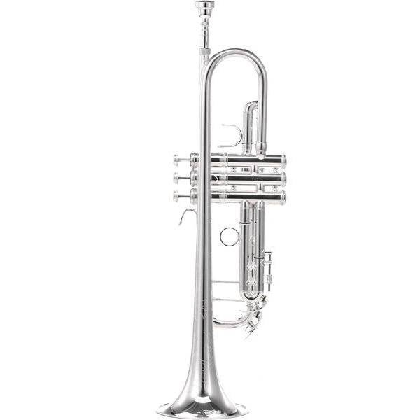
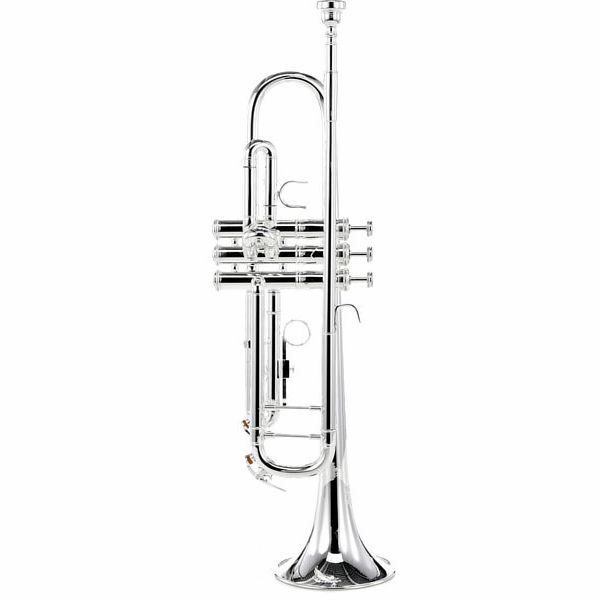
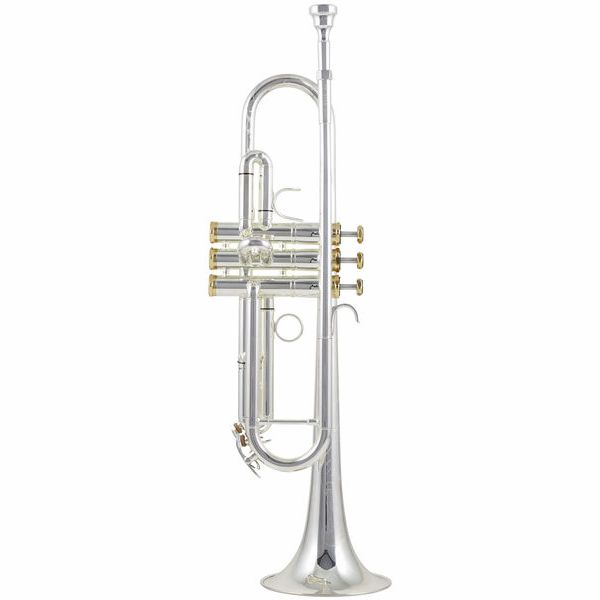

Catàleg de Trompetes
Trompetes per estudiants, assajos amb secció de vent i proves de so.
Models disponibles
 TROMPETES Thomann TR 200 Bb Trumpet Trompeta bàsica per estudiants principiants. Inclou accessoris i estoig. És fàcil de tocar. Reservar |
 TROMPETES Thomann TR 500 S Trompeta intermèdia amb millor afinació. Té vàlvules més precises. És adequada per estudi avançat. Reservar |
|
 TROMPETES Thomann TR 620 S Trompeta amb bona qualitat de so i construcció. Ofereix bona resposta. Ideal per estudi regular. Reservar |
 TROMPETES Thomann TR 800 S Trompeta avançada amb millor projecció. Té materials de qualitat superior. És per nivell alt. Reservar |
 TROMPETES Yamaha YTR-2330 Trompeta molt utilitzada en escoles. Té afinació precisa i so clar. És fàcil per aprendre. Reservar |